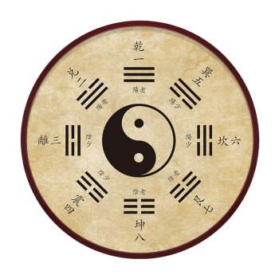

易经的奥秘
http://tv.cctv.com/2013/07/02/VIDA1372753217540879.shtml
什么叫太极？太有两个部分组合而成，一个部分是大，一个部分是点，大自不必说，那一点就代表小。所以太极告诉我们，大极了，而且又小极了。“其大无外”，大到没有外面，够大了吧？“其小无内”，小到找不到里面，够小了吧？孔子非常了解伏羲，他说世界上有一件东西，大到没有外面，小到没有里面，那叫什么呢？最后他就想到叫太极，这个名字起得好。
凡是有太的词都有类似的意思.太上皇大不大？答案还是很难讲，皇上敬重他，他就大；皇上不甩他，他就小，谁都不会理他。太上皇有没有威严，说话算不算数？这完全取决于皇帝。太监也一样，你说太监是大还是小，李连英这个太监，除了慈禧有谁比他还大，但是有的太监却一辈子都是让人吆喝东吆喝西的。所以以后碰到太这个字要特别小心，因为它可大可小。
动物是自然的一部分，不能离开自然；人也是自然的一部分，同样不能离开自然，。以我们现在得到一个很重要的标准，要分辨哪个对哪个错，就看它合不合自然。一切合自然的都是正确的，不合自然的，就算眼前是对的，迟早也是错的。从现在开始，一切要把自然当做最高的判断准则，合乎自然的你就放心去做，不合自然的事不是不做？不是。因为如果把做和不不做分开来看，就不是懂《易经》的人了。《易经》是从来不分开的，说不做就表示要慎重去做而不是不做，《易经》从来没有不做这回事。
天乾 风巽(xun) 水坎 山艮(gen) 地坤 雷震 火离 泽兑

山艮这个卦非常重要，艮就是叫你适可而止，做任何事情都要懂得适可而止，不要过分奢求。我们爬山的时候，爬累了就要休息一下，不能一味硬撑，否则还没到山顶就累死了。爬山要慢，这样才能欣赏美景，爬山快那就成挑夫了。所以有的事情要快才好，有的事情确实要慢一点才好。我们现在总是强调快快快，我觉得很奇怪，该快要快，该慢要慢，这才是《易经》的道理。该准时要准时，不该准时又为什么要准时呢？我明明知道那个人准备要打我骂我，那我还准时去挨打挨骂，那我不是傻瓜吗？孔子说过我们只对讲信用的人有信用，不可以对小人讲信用。可是一般人都认为对什么人都要讲信用，那是很奇怪的，对小人讲信用有什么用呢？
我们今天认为任何数字都要精确，这种观念有待商榷。应该精确的时候要一丝不苟，一分不差，不需要精确的时候，非要那么精确，其实是浪费成本，浪费时间，最后也没什么用处。中国现在有多少人？标准答案是谁也不知道，这才是真正的现实。说话间多少人出来，多少人死掉，怎么来得及统计呢？有人问你身上有几块钱，说“不知道”的是很有福气的人，如果有人说自己口袋里有127块钱，一张100的，两张10块的，还有7块钱是零的，那这个人真是劳碌命，真的是福气很薄。记住这些干什么呢？记得再清楚也不会多出一块钱来。但是当会计当出纳的人，账目一分一厘都要清楚，不能说自己不知道。当到总经理还要知道现在有多少库存，但最后一定是被活活累死，底下的人也没有办法做事情了。高层只要掌握个概略数就好，基层的要知道越准确越好。我们慢慢体会，各司其职，也是八卦所反映出来的道理。
一件事情一定要当时去做，否则时间一拖就错过了，明明是好事，也会拖成坏事。同样的道理，但时机没有成熟的情况下，硬要去做也不会成功。所以我们中国人知，道一定要守时待命。一切都准备好了，还不能动，一定要守那个时，一到马上就出动，自然很快就完成了。时还没到就动，别人都知道你要干什么了，你反而干不成事。
我们绝对不反对商业。商业在《易经》里面叫做交易。《易经》里面很重要的一个动作就叫交易，我们要互通有无，不然供需失衡的话，经济会受到很大的影响。我们不轻视商业，不排斥商业，但是也不能用商业来化，用商业来化，艺术就不见了。
商业化把学校搞垮了，弄得老师不专心教书。同样是老师，为什么人家赚那么多钱，我在这里做傻瓜，于是不好好教，去外面跟企业挂钩，这样的案例太多了。学生也不认真读书了，读了有什么用，还是想办法赚钱比较重要。商业化把科学家也毁掉了，科学家最紧要的工作是研究，研究要耐得住寂寞，一个人如果耐不住寂寞，就不要想研究出什么东西。现在很多科学家因为急着要赚钱，不做研究了，把不成熟的东西拿出去卖。我非常不客气的讲，什么叫知识经济，就是我对这个东西不太懂，我承认我不太懂，我知道我不太懂，但是我最起码比你懂，我就用我比你多懂得这么一点点知识来骗你，你就完了。
这些都是非常可怕的现象，人类全人类都会被搞垮，一切向钱看，将会毁灭一切，断送自我。当前人类就有这个通病，什么都不管，有钱眼就开了，听到有钱，半夜都去，把自己的命搞垮了，把自己的前途搞垮了，把这个家庭毁掉了，把这个社会搞乱了，毁灭一切，然后断送自我。
我再说一遍，要教化不要商业化，特别是教育不可以产业化，教育产业化就完了。文凭是假的，买的，老师也是假的，所有报告都是请人家做的，因为有钱就可以控制一切，导致师道都没有尊严了。
20世纪最大的笑话就是市场导向，为了顾客的需要，可以不顾自己做人的根本道理，比如蹦极爬的很高，然后将一条腿绑起来跳下去还要给人钱，我不知道这是在做什么。有市场吗？当然有市场，总有一些人会被骗，这个人玩完了一次恨死你了，下面又来一个新的，有市场没良心，这是不可以的。21世纪我们一定要把它改过来。
从现在开始叫什么导向？教化导向，我们所有的产品都有教育顾客的任务，目标只有一个，正大光明。你到故宫去看，历代相传的就是正大光明，我们将目标定为正大光明，又怎么会昧着良心呢？
记住一句话，目标正确，方向正确，方位搞清楚，远比速度更重要，上高速公路先问这条路是向南还是向北的再加速。否则本来要去深圳的，一上举越开越快，结果到了东北。方向永远比速度更优先。
所以我们不要相信：“一切都在变，只有变是不变的”。这种话听起来很好听，但却不堪一击，家是不会变的，否则你不会安定，世道是不会变的，否则人们还努力干什么，人事全非，但是江山仍旧在。虽然一直在变，却总有不变的东西存在，我们现在就是忙于应付这些变，所以搞得自己紧张忙碌，最终却一无所得。一个人看到变的时候，要去掌握后面那个不变的常则，那就是自然规律。
有一句话，很多人不会相信，甚至听了会很愤怒：人类最高的智慧就是以不变应万变。不变的是原则，万变的是现象，我们要用不变的原则来应对万变的现象，一个人里面一定要有原则，而且要坚持，但是外面要磨成圆的，才有办法跟别人妥协协调，最后达成一个大家都能接受的方案。内圆外圆的人是小人。他们没有理想，没有目标，唯利是图，有洞就钻，这些人是可耻的。内方外方也不好，内圆外方更不好，外圆内方的人才是可贵的。有句话很重要，能妥协却不能放弃立场，才叫圆通。因此我们得出一个结论，站在不变的立场上来变，才不会乱变。
到底要怎么变，这是中国人一生一世都要面对的难题，我们提出三个原则。
- 第一，权不离经，所有的变都不能离开规矩。
- 第二，权不损人，所有的变都不可以损害别人的权益。
- 第三，权不多用，偶尔用大家没有意见，常常用就表示你的规矩要改。一个人如果变到连根本都变掉了，那是最可怕的。
喜欢讲求新求变，还有一个很大的问题，就是会使人们觉得新的就是好的，旧的就是坏的，这是个最可怕的观念。为什么新的就是好的，实际上新的常常不如旧的。你看我们现在好怀念以前的东西，就是以前的东西简单明了。我们要说清楚，求新求变本身没有错，是人搞错了，认为新的一定比旧的好，这是错误的。你认为旧的再好也要换掉，那就叫喜新厌旧，如果一个人喜新厌旧，那这个人就没有指望，迟早连自己的太太也要换掉。
老子说：“不知常，妄作，凶”。一个人不知道常规就开始乱变，最后结果只有一个字凶。人一味乱变，到最后自己连立锥之地都没有了，这是多么可怕的事情。一个人对父母的孝可以变吗？对朋友的心可以变吗？这是不能变的，如果变了，亲人朋友之间的信任感就没有了，产生了疏离感，人与人之间本来没有疏离感，就是这样一点一点造成的。
《易经》不主张命定论，它里面最常用的字是“如”。“如”是假如，如果的意思，如果这样，你会怎么样，如果那样你会怎么样。《易经》的吉凶是有条件的，是可以变动的，会占卜的人不会铁口直断，凡是铁口直断的人都是不太会占卜的人。
我们把历史翻开来看，在夏商周的时代，民智未开，《易经》被用来占卜，这是很自然的事情。但是当时的占卜是有条件的。第一只能占国家的大事，占卜国家要不要战争，今年会不会风调雨顺，会不会国泰民安，会有什么变故，这个可以。但不能赞你的这支股票会不会赚钱，不可以占自己的私利。第二没有办法决定的时候可以占卜。古代的时候，当大臣们深思熟虑，想尽一切办法，最后还是不能下决定的时候，可以占卜，如果有明确的意向和决定的方向，是不可以占卜的。第三占卜完后，不一定要听，如果占卜完了就100%相信占卜的结果，那就是命定论。
汉代以后《易经》就分成两派，一派是讲义理的，就是把易经哲学化，把易经看成一种哲学。他们可以把它称为自然哲学，因为他取法的对象就是自然，从自然里归纳出的道理。另一派是讲象数，就是专门用来算卦或者占卜的。
一个人不能为了结果才去做事情，因为一问结果，做事的动机就不纯了。一个人应该做的事情，就算不能赚到钱也要去做，这样才对，如果只是有利可图才去做，那你就已经是小人了。从这点来分析，我们就知道现在生活中的很多观念，其实是不合乎《易经》的道理的，也就是不合乎自然的道理。
一棵树它能长就长，从来没有想到长大以后会怎么样。如果树想到长大以后会怎么样，那它就宁可不长了，因为长大后一定会被砍掉。任何人知道只要想到结果，就什么事情都不要做了，因为人生的结果是一模一样，非常平等的，就是一口棺材而已。我们一出生就有一个共同的目标，一步一步走向死亡。人生就是一步一步走向死亡的历程，有例外吗？好像没有，如果你想的很长远，想到最后都是死，那就什么都不要做了，这样事那样也是死，那干脆现在就死了算了，这种观念显然是不对的。
孔子体悟到占卜是有道理的，但是不能完全相信，因为有时候准，有时候不准。如果想占卜，必须先经过深思熟虑，当然有一个答案以后，才会根据这个答案去占卜，卜出来的结果会引导你去想这些问题，多一个卦就让你多思考一个方向。所以多看几个卦以后，你就会比较周到的去考虑这些问题，这才是占卜的目的。荀子讲，善易者不卜，是说真正懂得易经的人会占卜，但是却没有必要去卜。一个人要常常提醒自己用理智去指导感情，不要让情绪来左右理智。人都有情绪，但是不能情绪化，一旦情绪化，最后倒霉的只有自己。只要大多数的行为都是用理智来指导感情，这个人就很了不起，犯错的几率就很小。
孔子不反对占卜，因为它只是个工具，不是可以绝对相信的东西。你可以把占卜当作参考，但是你不能把它当做一个非这样不可的决定。我们占卜之后不要放弃自己的努力，还是要寻找破解的路，该做的事情遇到再大的困难也要想办法去化解，这才是正确的占卜观念。
孔子的一生就是一个完整的卦象。卦有六爻，孔子的一生正是分成了六个阶段：
- 十五而学
- 三十而立
- 四十不惑
- 五十知天命
- 六十而耳顺
- 七十从心所欲，不逾矩。
因为二分法这种思维方式在现在非常普遍，所以我们必须要多花些时间来说明。人类基本上是没有资格是非分明的，第一人类的认知是很有限的，根本搞不清楚，就分是非，怎么分呢？第二人类的选择能力很贫乏，经常会选错。第三人类的判断能力很薄弱。当老师的人多半如此，小学老师多半是只有对与错，中学老师多半是：“课本说对就是对，我也不知道”，已经比较有弹性了。因为他自己知道他没有能力分是非，但是最起码教科书是这么写的。我们现在的教育教的就是这个，然后我们又骂这种人，因为这种人是很典型的死脑筋一刀切，脑筋拐不了弯，可是是我们的教育把他教成这样的。
任何一句话一定要有“但是”，要有条件，就是阴阳不能分割。我们现在都把阴阳分割了，一分割就完了。一阴一阳谓之道，告诉我们阴阳始终是在一起的。比如饿了要吃饭对不对，这么简单的事情我们都不敢说对。当一个人饿的时候，你不能马上给东西它吃，他会撑死的。所以一个很饿的人，你拿一个鸡腿给他吃吃，准备害死他，你只能用很稀的稀饭给他喝一点点，不是不舍得，而是为他好。
记住每一件事情都可以有六十四种不同的状况，不能一概而论，否则那就是太粗糙，太鲁莽，太幼稚。我们现在最常听的话就是21世纪需要新的观念，这就是绝对的二分法。有些观念不管是几世纪永远不会变，比如勤劳节俭负责认真，只要有人类就不可能变。我们现在一直想变，变到最后连自己的根都没有了，这是最要命的事情。
我告诉大家，一个人不说实在话，不一定是骗人。我绝对不骗人，但是常常不说实在话，这不可以吗？我们只讲第三种话，叫做妥当话，中国人只可以讲妥当话。我们没有资格，没有权利讲老实话，因为讲老实话，一出口就是伤人。我们不能骗人，骗人是没有良心的。我们不骗人，不说实在话，专门讲妥当话，这样才有办法沟通。
你可你要第一个讲可以，但不要举手，你先看看别人一圈看过去，有人看你就请他先讲，他一定说不要，而且会请你先讲。你再请其他人先讲，所有人都不肯，你再站起来讲，没有人会嫉妒你，因为你已经谦让了那么多人，这时候就应该当仁不让。如果你一个人都不让，就自己站起来讲话，那就表示你完全是目中无人，谁愿意听你讲什么呢？中国人会推拖拉是有用意的，就是我对你有礼貌或尊重你，你要先讲，我一定不跟你抢，但是你们都不肯先讲，那抱歉我先讲，这时候才叫当仁不让。所以同样是第一个讲，会收到两种截然不同的效果，其实就这么一点点差别而已。
你准备好了，还要再观望观望，真的没有人比你更好，你才表现。你准备好了，可是发现自己还是不行，那就干脆不要表现了，至少不会出丑，你不表现是不会出丑的。你不开口，人家真的搞不清楚你有多大内涵，可是只要你一开口，五脏六腑都被人看的清清楚楚，所以一定要做好充分的准备，才能站起来讲。一个人做好了充分的准备，还要看时机，如果时机不对就要潜。诸葛亮很早就准备好了，但是时机不对他不出来，如果时机对，他不出来也不行。刘备三顾茅庐，诸葛亮还不下山，那他一辈子就默默无闻了，历史上就不会记载他，我们也就不知道有他这个人，他就白活一生了。老师讲诸葛亮下山的时候，他知道自己这辈子是不会成功的，只是因为看到刘备那么诚恳才同意下山的，诸葛亮最伟大之处，就是知其不可为而为之。
你当一个基层的主管，做得很好的时候，很多人会来巴结，请托你，送你礼物，在公开场合吹捧你。可是你通常不觉得那是吹捧。会觉得他们说的很对，觉得自己本来就很出色，能力很强，所以就很享受，然后就完蛋了。记住功劳永远是老板的，作为一个部署是永远没有功劳的。铭记这一点，你才会不断的有机会，如果你觉得自己有成就有功劳，那领导就不会再给你机会了。有了小成就，就没有大成就了。像我们这个年龄，小时候就是一起被骂，这样到最后我们才勉勉强强有点东西，这就是激励的结果。
其实人生就是一步步走向艰难险阻，从我们一出生，摆在我们前方的就是艰难险阻，而最后的结果，也是跟孔明一样，死而后已。每一个人都是这样，没有两样。职位低的人他们回家还可以老酒一杯，还可以看看电视。到了中层就不行了，回去敢看电视吗？要赶快看报纸，看完这个看那个还要上网看。到了高阶层，别说看电视，就连看报的心情都没有了，整天忙得团团转。人必须要精进，从基层到中层再到高层，这是必然的精进过程，所以一个人要想办法把自己修炼好，才能去担当重大的任务。现在很多人都是没有准备好，就去挑那个担子，挑到自己精疲力竭，然后就开始抱怨社会不公平，抱怨社会对他太苛刻，那是不对的。只有到了领导层才可能会面临人家要灌你酒，用女色引诱你的这些情况，六四是领导器重的人，同样面临着各种各样的诱惑，这种诱惑都是有目的的。女色不会引诱基层的人，专门引诱六四，只要抓住六四他就抓到了许多东西。所以到了六四这个阶层，最重要的就是口风要紧，口风紧不是不说话，而是说适当的话，说妥当的话。
一命，二运，三风水，四积德，五读书，这是我们中国人普遍都很了解，但是都有一点扭曲的东西。很多人解释说一命就是说命最重要，我觉得不是这样，其实我们也可以从下面看起，五读书说读书才是最重要的，也未尝不可，并不是排在前面的是最重要的。要不然现在为什么叫知识时代？但是现在所讲的知识实在是非常危险的，因为现代人不知道什么叫做读书了。什么叫做读书？读书不是看读了多少书，读书最重要的是要明白道理，如果读了半天不明理，读书又有什么用呢？古代人一辈子没有读几本书，可是他们一辈子过得好好的，为什么？因为明白道理。现代的人读的比古代人多了不知道多少倍，可是人情世故却越来越不懂了。读书这两个字最好解释成明理，明白什么道理？明白《易经》的道理，《易经》很少加上人为的东西，一切按照自然的规律，心安理得。植物有没有读书？动物有没有读书？可是动植物用不着算命，却依然活得好好的。我们明白道理，按照自然的规律去走，就能立于不败之地。但是没有人有这个把握，因为吾生也有涯，而知也无涯。生命有限，哪怕从小就很用功，就很认真，穷毕生之力想把所有的道理都搞通，也是不大可能的。这就是人很可怜的局限性，所以只好退而求其次，用积阴德来弥补。
我们现在因为观念混淆，老觉得吉凶就是利害。假如真是这样，我们直接趋利避害就好了，为什么还要讲吉凶呢？利害其实只短暂的现象，得失才是比较长期的效果。有两句话我相信大家都听过，恩生于害，害生于恩。领导对你好，你就不长进了，放纵自己养成很多坏习惯。相反领导一直督促你，对你很严苛，你就学到一身的功夫。利是害的来源，害是利的基础。一个人如果能够按照易经的思维，把利害合在一起想，就会慢慢得到正确的观念。
一个人成功的时候，最怕的就是马上要失败。你成绩不那么好，别人就不会追赶你，成绩好所有人都追着你，你就给自己带来很多压力。如果你这一次排名是冠军，你要知道很多人都在默默地努力，发奋地学习，只有一个期望，就是想超过你。因此我们千万要记住，做任何事都只问应不应该，少问结果会怎么样，人生应该是享受过程，而不是计较结果。
做一件事情先问问自己，心里有没有理想，有了理想你就没有什么吉凶了，没有理想你就会有吉凶。如果这件事情是我一生一定要做的，那我不管失败成功都要做，不要再去考虑结果是吉还是凶。人一旦有了吉凶观念就表示已经不是最高等的了，已经拿到了中等。如果不敢说吉凶是自己在定，而相信吉凶是命待定，那就是更下一等。
在小事上我们不要特立独行，要特立独行，一定要在大事上面。在小事上标新立异，只会让人看不起你。
什么叫趋吉避凶？一句话就讲清楚了，就是要从“吉凶悔吝”这个人生必然律里面挣脱出来。那么怎样才能挣脱人生的必然律呢？答案很简单，只要能后悔在先，不要后悔在后，就完全可以趋吉避凶。做任何一件事之前都要想事情的后果，可能怎么样，出现这种后果我后悔吗？如果事先不想，万事都先做了再说，到时候再后悔就晚了，因为凶已经出现了。如何才能让凶永远不会出现呢？中国人有句老话叫做立于不败之地，一个人能够立于不败之地当然就没有凶了，可是我们会发现这样也没有吉了，因为人生本来就是要超越吉凶的。我们把预先考虑事情后果叫做具有忧患意识，这绝不是自寻烦恼。自寻烦恼是无事生非，而具有忧患意识则是未雨绸缪，两者完全是不一样的。
吉悔常用的时候，吝凶就可以避免，这是我们的法则。吉和悔是联系在一起的，当我们顺利的时候先不要高兴，应该想到自己这样顺利，会不小心得罪很多人，然后就加倍小心，这样可以避免很多麻烦。
我们要知道我们的错误是把道德捧的太高，把器贬得太低。读书人只为了做官，只为了考试考得好，五谷不分，什么事都不会做，这不是《易经》所要的人。这就是我们不发达的主要原因。我们一开口就是修身，齐家，治国，平天下。前面的基础呢？格物致知为什么要丢掉呢？什么叫格物，就是好好把物理学好。不读物理学，不读数学，很多事情根本搞不清楚。比如现在很多读文史哲的人经常是飘在半空中，而读理工的人又太过死心眼，这是我们的问题，只要调整一下就好了。所以我们今天要很正经的讲一句话，我们承认我们近百年来科学比西方落后，但是这个不是本质性的东西，是时代性的。这是时代性所造成的悲剧，而不是我们的本质出了问题。